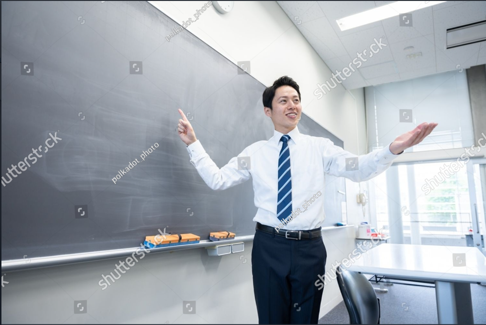

Aquí encontrarás una breve descripción de los docentes que se encuentran conectados de lunes a viernes.
Docente de Física
El profesor Juan Camilo Acuña es un apasionado de la física con más de 5 años de experiencia en la enseñanza donde se enfoca desde lo práctico y dinámico.
ContactarDocente de Química
La profesora Marcela Gómez es una entusiasta de la química que lleva más de una década inspirando a sus estudiantes con su enfoque creativo y aplicado.
ContactarDocente de Robótica
El profesor Roberto Vásquez es un innovador en el campo de la robótica educativa con un enfoque en la enseñanza a través de proyectos y cuenta con 8 años de experiencia.
ContactarDocente de Biología
La profesora Erika Escobar es bióloga especializada en ecología y conservación, con más de 6 años de experiencia en la enseñanza.
ContactarDocente de Biología
La profesora Isabel Castañeda es una experta en biología molecular con una sólida formación en investigación científica y cuenta con 10 años de experiencia docente.
Contactar